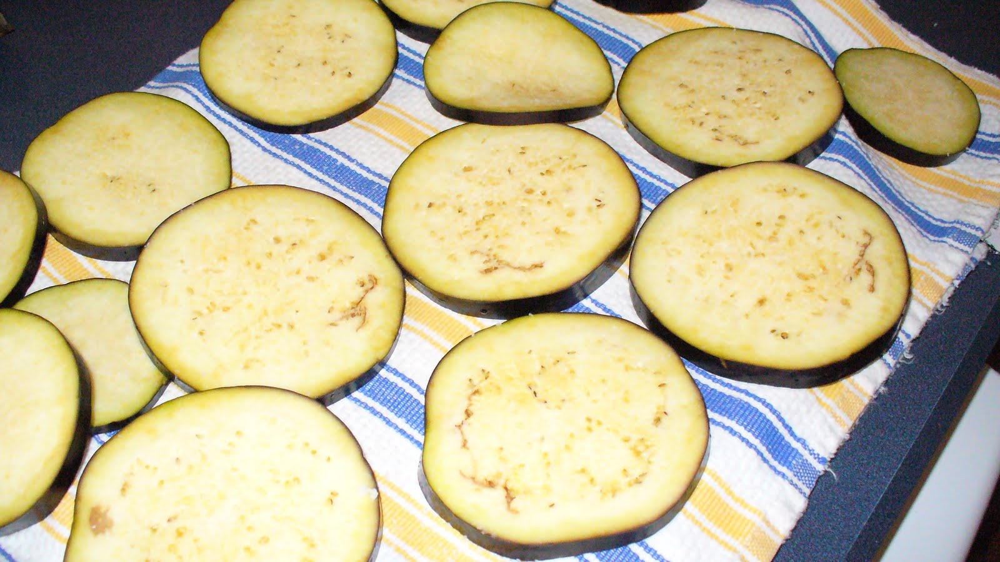

Step 2: Peel the eggplants and cut them into quarter-inch slices; salt them and place them between to plates to press out the bitter juices. After 1 to 2 hours rinse them and pat them dry. In the mean time, heat a pot of oil to the smoking point, then fry the slices, a few at a time, removing them from the oil while they are still lightly colored. Set the slices upright in a rack to drain, then put them on a sheet of absorbent paper to remove all the oil you can.
